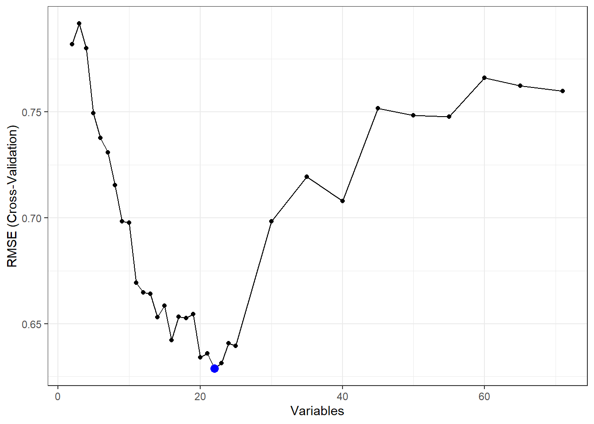
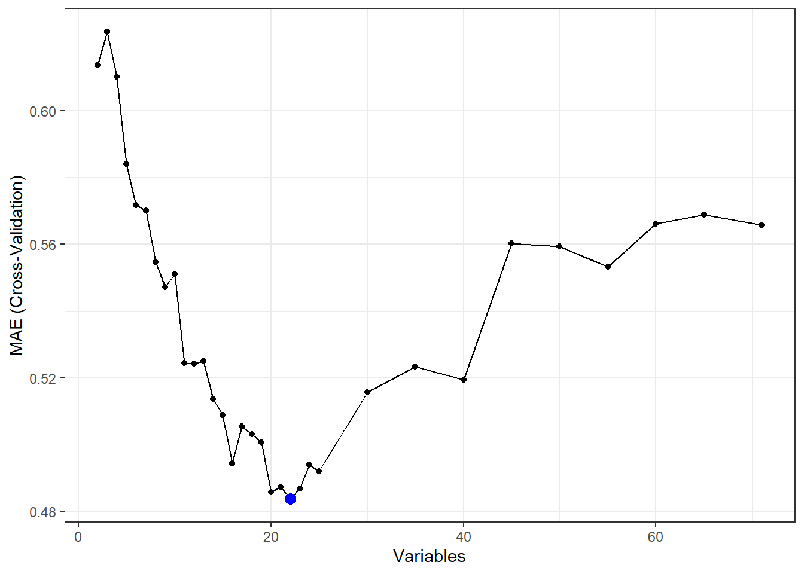
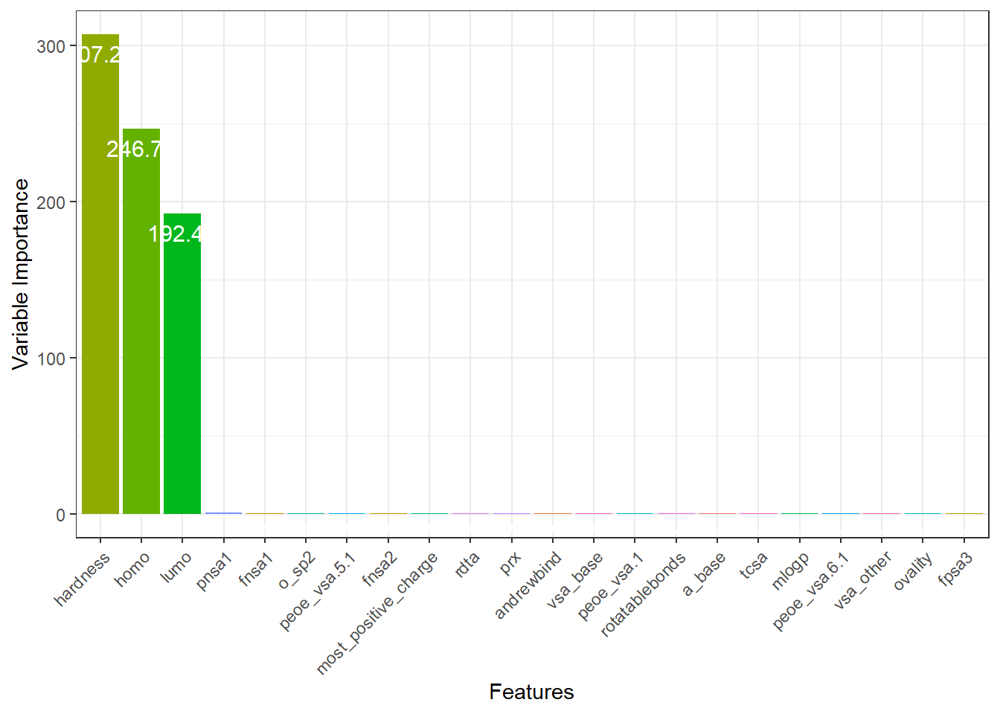
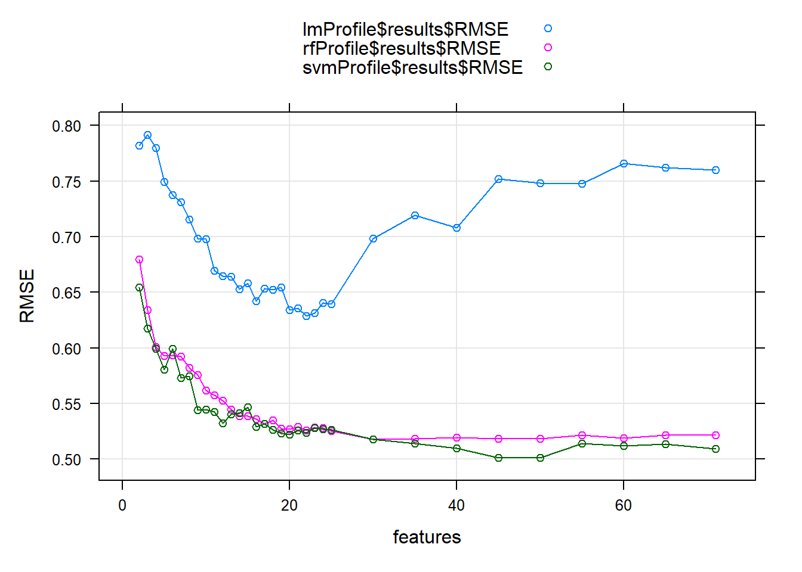
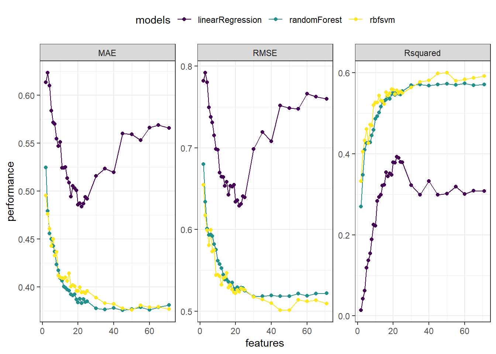

library(caret)
## Loading required package: ggplot2
## Warning: package 'ggplot2' was built under R version 4.2.3
## Loading required package: lattice
# 加载后会在当前环境下出现自变量数据框bbbDescr，因变量是logBBB
data(BloodBrain)
psych::headTail(bbbDescr)
## tpsa nbasic negative vsa_hyd a_aro weight peoe_vsa.0 peoe_vsa.1 peoe_vsa.2
## 1 12.03 1 0 167.07 0 156.29 76.95 43.45 0
## 2 49.33 0 0 92.64 6 151.16 38.24 25.52 0
## 3 50.53 1 0 295.17 15 366.48 58.05 124.74 21.65
## 4 37.39 0 0 319.11 15 382.55 62.24 124.74 13.19
## ... ... ... ... ... ... ... ... ... ...
## 205 3.24 0 0 343.24 10 292.45 40.6 104.68 13.19
## 206 32.34 1 0 234.79 6 261.39 75.12 86.67 0
## 207 37.3 0 0 124.26 0 143.21 63.98 14.71 0
## 208 64.43 0 0 224.75 10 319.38 74.42 43.65 29.69
## peoe_vsa.3 peoe_vsa.4 peoe_vsa.5 peoe_vsa.6 peoe_vsa.0.1 peoe_vsa.1.1
## 1 0 0 0 17.24 18.75 43.51
## 2 8.62 23.27 0 0 49.02 0
## 3 8.62 17.44 0 8.62 83.82 49.02
## 4 21.79 0 0 8.62 83.82 68.78
## ... ... ... ... ... ... ...
## 205 0 0 0 8.62 85.17 117.4
## 206 8.62 12.95 0 8.62 34.07 62.01
## 207 0 0 0 0 17.4 54.9
## 208 6.7 0 12.95 14.71 82.73 19.76
## peoe_vsa.2.1 peoe_vsa.3.1 peoe_vsa.4.1 peoe_vsa.5.1 peoe_vsa.6.1 a_acc
## 1 0 0 0 0 0 0
## 2 0 0 0 13.57 7.9 2
## 3 0 0 5.68 2.5 2.64 2
## 4 0 0 5.68 0 2.64 2
## ... ... ... ... ... ... ...
## 205 0 0 0 0 0 0
## 206 0 0 0 13.57 0.14 1
## 207 0 0 0 0 27.13 0
## 208 0 0 5.68 27.13 2.5 4
## a_acid a_base vsa_acc vsa_acid vsa_base vsa_don vsa_other vsa_pol
## 1 0 1 0 0 5.68 5.68 0 0
## 2 0 0 13.57 0 0 5.68 28.11 13.57
## 3 0 1 8.19 0 0 5.68 43.56 0
## 4 0 1 8.19 0 0 5.68 28.32 0
## ... ... ... ... ... ... ... ... ...
## 205 0 1 0 0 0 0 0 0
## 206 0 1 13.57 0 0 5.68 19.65 0
## 207 2 0 27.13 27.13 0 0 14.71 0
## 208 0 0 35.32 0 0 0 47.76 0
## slogp_vsa0 slogp_vsa1 slogp_vsa2 slogp_vsa3 slogp_vsa4 slogp_vsa5
## 1 18.01 0 3.98 0 4.41 32.9
## 2 25.39 23.27 23.86 0 0 0
## 3 14.12 34.8 0 76.25 3.19 9.51
## 4 14.12 34.8 0 76.25 3.19 0
## ... ... ... ... ... ... ...
## 205 3.12 0 0 52.5 3.19 32.9
## 206 3.12 23.27 23.86 55.32 6.37 37.74
## 207 42.68 1.46 23.86 0 4.41 0
## 208 0 34.81 11 0 54.6 32.9
## slogp_vsa6 slogp_vsa7 slogp_vsa8 slogp_vsa9 smr_vsa0 smr_vsa1 smr_vsa2
## 1 0 0 113.21 33.33 0 18.01 4.41
## 2 0 70.57 0 41.33 23.86 25.39 0
## 3 0 148.13 75.47 28.27 12.63 27.79 0
## 4 0 144.04 75.47 55.46 3.12 27.79 0
## ... ... ... ... ... ... ... ...
## 205 0 163.93 0 118.42 3.12 0 0
## 206 0 52.93 37.74 69.41 26.99 0 0
## 207 0 0 75.47 66.65 66.55 0 4.41
## 208 0 53 0 149.7 58.72 21.81 0
## smr_vsa3 smr_vsa4 smr_vsa5 smr_vsa6 smr_vsa7 tpsa.1 logp.o.w. frac.anion7.
## 1 3.98 0 113.21 0 66.22 16.61 2.95 0
## 2 5.24 20.77 70.57 5.26 33.33 49.33 0.89 0
## 3 8.43 29.58 235.06 76.25 0 51.73 4.44 0
## 4 8.43 21.4 235.06 76.25 31.28 38.59 5.25 0
## ... ... ... ... ... ... ... ... ...
## 205 37.25 5.15 177.23 18.44 132.88 4.44 5.89 0
## 206 6.37 20.77 128.4 60.58 66.65 33.54 3.02 0
## 207 0 0 75.47 1.46 66.65 40.13 2.65 0.99
## 208 6.87 2.76 68.68 13 164.15 64.43 1.6 0
## frac.cation7. andrewbind rotatablebonds mlogp clogp mw nocount hbdnr
## 1 1 3.4 3 2.5 2.97 155.29 1 1
## 2 0 -3.3 2 1.06 0.49 151.17 3 2
## 3 0.99 12.8 8 4.66 5.14 365.48 5 1
## 4 0.99 12.8 8 3.82 5.88 381.54 4 1
## ... ... ... ... ... ... ... ... ...
## 205 0.54 7.3 6 4.98 5.96 291.44 1 0
## 206 1 8.6 7 2.63 2.8 260.38 3 1
## 207 0 -3.7 5 2.06 2.76 144.22 2 1
## 208 0 6.2 3 1.66 1.36 319.39 6 0
## rule.of.5violations alert prx ub pol inthb adistm adistd polar_area
## 1 0 0 0 0 0 0 0 0 21.12
## 2 0 0 1 3 2 0 395.38 10.89 117.41
## 3 1 0 6 5.3 3 0 1364.55 25.68 82.09
## 4 1 0 2 5.3 3 0 702.64 10.02 65.09
## ... ... ... ... ... ... ... ... ... ...
## 205 1 0 0 4.7 0 0 0 0 4.67
## 206 0 0 1 3 1 0 419.76 8.41 93.71
## 207 0 0 2 1 0 0 101.76 20.84 76.85
## 208 0 0 5 4.7 2 0 1208.28 43.16 73.62
## nonpolar_area psa_npsa tcsa tcpa tcnp ovality surface_area volume
## 1 379.07 0.06 0.01 0.18 0.01 1.1 400.19 656.07
## 2 247.54 0.47 0.01 0.04 0.02 1.12 364.95 555.1
## 3 637.72 0.13 0.01 0.1 0.01 1.3 719.82 1224.46
## 4 667.97 0.1 0.01 0.12 0.01 1.3 733.06 1257.2
## ... ... ... ... ... ... ... ... ...
## 205 623.48 0.01 0.01 1.09 0.01 1.24 628.14 1072.64
## 206 452.7 0.21 0.01 0.07 0.01 1.18 546.41 931.18
## 207 292.74 0.26 0.01 0.05 0.01 1.09 369.58 586.54
## 208 482.03 0.15 0.01 0.1 0.01 1.18 555.65 959.84
## most_negative_charge most_positive_charge sum_absolute_charge dipole_moment
## 1 -0.62 0.31 3.89 1.19
## 2 -0.84 0.5 4.89 4.21
## 3 -0.8 0.54 7.98 3.52
## 4 -0.76 0.48 7.93 3.15
## ... ... ... ... ...
## 205 -0.4 0.14 5.1 0.49
## 206 -0.8 0.5 6.66 4.14
## 207 -0.51 0.41 4.21 1.61
## 208 -0.77 0.59 7.13 2.93
## homo lumo hardness ppsa1 ppsa2 ppsa3 pnsa1 pnsa2 pnsa3 fpsa1 fpsa2
## 1 -9.67 3.4 6.54 349.14 679.38 30.97 51.06 -99.35 -10.49 0.87 1.7
## 2 -8.96 0.19 4.58 223.13 545.83 42.3 141.81 -346.91 -44.04 0.61 1.5
## 3 -8.63 0.06 4.34 517.82 2066.02 63.95 202 -805.93 -43.76 0.72 2.87
## 4 -8.56 -0.27 4.15 507.61 2012.91 61.69 225.45 -893.99 -42.03 0.69 2.75
## ... ... ... ... ... ... ... ... ... ... ... ...
## 205 -8.72 -0.36 4.18 443.86 1132.32 45.54 184.28 -470.11 -24.72 0.71 1.8
## 206 -9.08 0.1 4.59 382.32 1272.66 48.96 164.09 -546.24 -44.86 0.7 2.33
## 207 -10.9 1.31 6.11 287.3 604.89 34.14 82.28 -173.23 -27.97 0.78 1.64
## 208 -9.65 -1.21 4.22 407.36 1453.1 47.58 148.29 -528.97 -38.48 0.73 2.62
## fpsa3 fnsa1 fnsa2 fnsa3 wpsa1 wpsa2 wpsa3 wnsa1 wnsa2 wnsa3 dpsa1
## 1 0.08 0.13 -0.25 -0.03 139.72 271.89 12.39 20.43 -39.76 -4.2 298.08
## 2 0.12 0.39 -0.95 -0.12 81.43 199.2 15.44 51.75 -126.6 -16.07 81.32
## 3 0.09 0.28 -1.12 -0.06 372.74 1487.16 46.03 145.4 -580.12 -31.5 315.83
## 4 0.08 0.31 -1.22 -0.06 372.11 1475.58 45.22 165.27 -655.35 -30.81 282.17
## ... ... ... ... ... ... ... ... ... ... ... ...
## 205 0.07 0.29 -0.75 -0.04 278.81 711.26 28.6 115.75 -295.3 -15.53 259.58
## 206 0.09 0.3 -1 -0.08 208.9 695.39 26.75 89.66 -298.47 -24.51 218.22
## 207 0.09 0.22 -0.47 -0.08 106.18 223.56 12.62 30.41 -64.02 -10.34 205.03
## 208 0.09 0.27 -0.95 -0.07 226.35 807.42 26.44 82.4 -293.92 -21.38 259.07
## dpsa2 dpsa3 rpcg rncg wpcs wncs sadh1 sadh2 sadh3 chdh1 chdh2 chdh3
## 1 778.73 41.46 0.16 0.32 2.38 1.91 15.1 15.1 0.04 0.31 0.31 0
## 2 892.75 86.34 0.2 0.34 1.31 2.25 45.22 22.61 0.12 0.8 0.4 0
## 3 2871.95 107.71 0.14 0.2 1.14 1.57 16.72 16.72 0.02 0.46 0.46 0
## 4 2906.89 103.72 0.12 0.19 0.76 1.53 17.25 17.25 0.02 0.44 0.44 0
## ... ... ... ... ... ... ... ... ... ... ... ... ...
## 205 1602.43 70.26 0.06 0.16 1.15 0.73 0 0 0 0 0 0
## 206 1818.89 93.82 0.15 0.24 1.3 2.66 23.17 23.17 0.04 0.43 0.43 0
## 207 778.12 62.11 0.19 0.24 0.86 3.84 30.8 30.8 0.08 0.4 0.4 0
## 208 1982.08 86.06 0.16 0.22 0.92 0.13 0 0 0 0 0 0
## scdh1 scdh2 scdh3 saaa1 saaa2 saaa3 chaa1 chaa2 chaa3 scaa1 scaa2 scaa3
## 1 4.63 4.63 0.01 6.03 6.03 0.02 -0.62 -0.62 0 -3.72 -3.72 -0.01
## 2 17.62 8.81 0.05 65.62 32.81 0.18 -0.84 -0.42 0 -27.51 -13.76 -0.08
## 3 7.61 7.61 0.01 57.54 14.39 0.08 -1.37 -0.34 0 -21.79 -5.45 -0.03
## 4 7.51 7.51 0.01 39.86 13.29 0.05 -1.23 -0.41 0 -17.6 -5.87 -0.02
## ... ... ... ... ... ... ... ... ... ... ... ... ...
## 205 0 0 0 4.67 4.67 0.01 -0.4 -0.4 0 -1.86 -1.86 0
## 206 9.97 9.97 0.02 59.43 29.72 0.11 -0.79 -0.39 0 -22.21 -11.11 -0.04
## 207 12.34 12.34 0.03 46.05 23.02 0.12 -0.93 -0.46 0 -20.72 -10.36 -0.06
## 208 0 0 0 71.59 17.9 0.13 -1.4 -0.35 0 -24.58 -6.14 -0.04
## ctdh ctaa mchg achg rdta n_sp2 n_sp3 o_sp2 o_sp3
## 1 1 1 0.92 0.92 1 0 6.03 0 0
## 2 2 2 1.27 1.04 1 0 6.57 32.01 33.61
## 3 1 4 1.26 1.26 0.25 26.97 10.86 0 27.55
## 4 1 3 1.2 1.2 0.33 21.71 11 0 15.13
## ... ... ... ... ... ... ... ... ... ...
## 205 0 1 0 0 0 0 4.67 0 0
## 206 1 2 1.23 1.23 0.5 0 16.18 54.36 0
## 207 1 2 0.91 0.91 0.5 0 0 30.1 15.94
## 208 0 4 0 0 0 26.67 2.03 40.46 4.47
head(logBBB)
## [1] 1.08 -0.40 0.22 0.14 0.69 0.4416 递归特征消除
本文节选自R语言机器学习系列合集。
前面的推文已经给大家介绍了机器学习中特征选择的常见方法，以及目前在R语言中的实现情况，主要就是3个包：caret、mlr3、tidymodels
今天给大家介绍caret中的递归特征消除法。
递归特征消除(recursive feature elimination，rfe)是变量筛选的方法之一，属于包装法，同时也是向后选择法。
注意
大家在医学相关的SCI中见的比较多的应该是支持向量机的递归特征消除，但是rfe只是一种方法，除了支持向量机，还有非常多的算法(模型)可以与递归特征消除一起使用，比如随机森林、线性回归、朴素贝叶斯等等。
caret中的rfe的基本做法是这样的：对模型进行多次训练，每次训练后消除不重要的特征（这个可以用变量重要性、变量的系数等衡量，不同算法有不同的衡量标准），再使用剩下的特征继续训练。
在caret中通过rfeIter和rfe分别实现递归特征消除和交叉验证的递归特征消除。
16.1 rfeIter
做法如下：
1. 在训练集中使用所有的预测变量进行建模
2. 计算模型表现
3. 计算变量重要性并进行排序
4. 对每一个样本量大小为S[i]，i = 1,2...,S的子集
5. 保留S[i]个最重要的变量
6. [可选]预处理数据
7. 用保留的S[i]个变量在训练集中建模
8. 计算模型表现
9. [可选]重新计算变量重要性
10. 结束
11. 计算每个子集的模型表现
12. 决定合适的变量个数（即最优的模型对应的变量）
13. 使用最优的变量拟合最终的模型16.2 交叉验证rfe
单纯的递归特征消除容易出现过拟合问题，所以出现了交叉验证的递归特征消除(rfecv)。rfecv实现了对整个变量选择过程的重抽样，因此可以获得更加准确的结果。
它的步骤如下：
1. 对每一次重抽样做以下事情：
1. 重抽样把数据划分为训练集/测试集
2. 使用训练集中的所有预测变量进行建模
3. 计算模型表现
4. 计算变量重要性或者排序
5. 对每一个样本量大小为S[i]，i = 1,2...,S的子集：
1. 保留S[i]个最重要的变量
2. [可选]预处理数据
3. 用保留的S[i]个变量在训练集中建模
4. 在测试集计算模型表现
5. [可选]重新计算变量重要性
6. 结束
2. 结束
3. 在测试集中计算每个子集的模型表现
4. 决定合适的预测变量数量
4. 决定最终的预测变量
5. 用最初的训练集和最终的预测变量拟合最终模型rfecv包含两层循环，举个例子，比如最开始的一层循环我们是用10折交叉验证，10折交叉验证把数据分为10份，其中9折用来进行变量选择，剩下的1折用来评估每个变量子集的模型表现。整个变量选择的过程会重复进行10次，最终会得到10个变量子集，选择最好的那个，然后拟合最终的模型。
说起来蛮复杂的，不理解也问题不大，我知道你们只是想要一个牛逼的结果而已……
上面这么多步骤只需要rfe函数即可完成，不用担心，简单得很！
以下是交叉验证递归特征消除的演示，使用rfe函数实现，rfeIter就不演示了。
16.3 caret实操
caret支持非常多的模型，可以做递归特征消除，有几个是已经预定义好的，可以写上名字直接用：
- 线性回归
lmFuncs， - 线性判别分析
ldaFuncs， - 广义线性模型
gamFuncs - 逻辑回归
lrFuncs - 随机森林
rfFuncs， - 朴素贝叶斯
nbFuncs， - 袋装树
treebagFuncs
除此之外，所有train()函数可以用的模型，都能做递归特征消除。下面会演示用法。如果你不知道train能用的模型有哪些，参考这篇推文：caret可视化
caret中通过rfe实现交叉验证的递归特征消除，rfe函数有几个主要的参数：
x：预测变量，可以是矩阵或者数据框y：结果变量，需要数值型或者因子型向量，a vector (numeric or factor) of outcomessizes：整数型向量，每次迭代留下的重要性比较高的特征数量，结合下面的例子理解metric：模型评价指标，分类默认Accuracy和Kappa，回归默认RMSE和MAErfecontrol：选择算法，重抽样方法等
用caret自带的BloodBrain数据集进行演示。
Mente和Lombardo(2005)开发了预测大脑中化合物浓度与血液中化合物浓度比值对数的模型。对于每一种化合物，他们计算了三组描述分子的变量:MOE 2D、rule-of-five和Charge Polar Surface Area (CPSA)。
其中数据集bbbDescr总共有134列(134个描述分子性质的预测变量)，208行(208个分子化合物)。向量logBBB是浓度比值的对数，是结果变量。
首先对这个数据做一下数据预处理，如果你看不懂下面这段代码，强烈建议你先看前面的推文：R语言机器学习caret-02：数据预处理
x <- scale(bbbDescr[,-nearZeroVar(bbbDescr)])
x <- x[, -findCorrelation(cor(x), .8)]
x <- as.data.frame(x, stringsAsFactors = TRUE)
psych::headTail(x)
## nbasic peoe_vsa.0 peoe_vsa.1 peoe_vsa.2 peoe_vsa.3 peoe_vsa.4 peoe_vsa.5
## 1 1.31 0.4 -0.81 -0.88 -0.76 -0.63 -0.56
## 2 -0.76 -0.72 -1.25 -0.88 -0.16 1.9 -0.56
## 3 1.31 -0.15 1.22 0.39 -0.16 1.27 -0.56
## 4 -0.76 -0.03 1.22 -0.1 0.74 -0.63 -0.56
## ... ... ... ... ... ... ... ...
## 205 -0.76 -0.66 0.72 -0.1 -0.76 -0.63 -0.56
## 206 1.31 0.35 0.27 -0.88 -0.16 0.78 -0.56
## 207 -0.76 0.02 -1.52 -0.88 -0.76 -0.63 -0.56
## 208 -0.76 0.33 -0.8 0.87 -0.29 -0.63 1.27
## peoe_vsa.6 peoe_vsa.0.1 peoe_vsa.1.1 peoe_vsa.4.1 peoe_vsa.5.1 peoe_vsa.6.1
## 1 0.07 -0.9 -0.29 -0.61 -0.81 -0.69
## 2 -1.3 0.16 -1.36 -0.61 0.51 0.16
## 3 -0.62 1.38 -0.16 0.24 -0.56 -0.41
## 4 -0.62 1.38 0.32 0.24 -0.81 -0.41
## ... ... ... ... ... ... ...
## 205 -0.62 1.42 1.51 -0.61 -0.81 -0.69
## 206 -0.62 -0.36 0.16 -0.61 0.51 -0.68
## 207 -1.3 -0.95 -0.02 -0.61 -0.81 2.24
## 208 -0.13 1.34 -0.87 0.24 1.83 -0.42
## a_acc a_base vsa_base vsa_other vsa_pol slogp_vsa0 slogp_vsa1 slogp_vsa2
## 1 -1.45 -0.14 0.04 -1.74 -0.51 -0.55 -1.13 -0.66
## 2 -0.06 -1.04 -0.58 0.08 1.51 -0.24 0.3 0.43
## 3 -0.06 -0.14 -0.58 1.08 -0.51 -0.71 1.01 -0.87
## 4 -0.06 -0.14 -0.58 0.1 -0.51 -0.71 1.01 -0.87
## ... ... ... ... ... ... ... ... ...
## 205 -1.45 -0.14 -0.58 -1.74 -0.51 -1.17 -1.13 -0.87
## 206 -0.75 -0.14 -0.58 -0.47 -0.51 -1.17 0.3 0.43
## 207 -1.45 -1.04 -0.58 -0.78 -0.51 0.48 -1.04 0.43
## 208 1.33 -1.04 -0.58 1.35 -0.51 -1.3 1.01 -0.27
## slogp_vsa4 slogp_vsa5 slogp_vsa6 slogp_vsa8 slogp_vsa9 smr_vsa0 smr_vsa1
## 1 -0.46 0.13 -0.51 2.67 -0.64 -0.99 -0.41
## 2 -0.85 -0.98 -0.51 -0.93 -0.45 -0.06 -0.14
## 3 -0.57 -0.66 -0.51 1.47 -0.76 -0.5 -0.06
## 4 -0.57 -0.98 -0.51 1.47 -0.11 -0.87 -0.06
## ... ... ... ... ... ... ... ...
## 205 -0.57 0.13 -0.51 -0.93 1.38 -0.87 -1.07
## 206 -0.29 0.3 -0.51 0.27 0.22 0.06 -1.07
## 207 -0.46 -0.98 -0.51 1.47 0.15 1.59 -1.07
## 208 3.91 0.13 -0.51 -0.93 2.12 1.29 -0.27
## smr_vsa2 smr_vsa3 smr_vsa4 smr_vsa6 smr_vsa7 frac.cation7. andrewbind
## 1 -0.5 -0.87 -0.64 -1.21 -0.01 0.81 -0.98
## 2 -0.74 -0.74 0.95 -1.03 -0.78 -1.39 -2.02
## 3 -0.74 -0.4 1.62 1.42 -1.57 0.78 0.48
## 4 -0.74 -0.4 1 1.42 -0.83 0.78 0.48
## ... ... ... ... ... ... ... ...
## 205 -0.74 2.63 -0.25 -0.58 1.55 -0.2 -0.38
## 206 -0.74 -0.62 0.95 0.88 0 0.8 -0.18
## 207 -0.5 -1.29 -0.64 -1.16 0 -1.39 -2.09
## 208 -0.74 -0.57 -0.43 -0.76 2.29 -1.39 -0.55
## rotatablebonds mlogp clogp rule.of.5violations prx ub pol inthb
## 1 -0.54 -0.19 0.15 -0.48 -1.01 -3.27 -1.36 -0.24
## 2 -0.86 -1.44 -1.18 -0.48 -0.67 -0.94 0.19 -0.24
## 3 1.09 1.67 1.32 1.69 1.01 0.85 0.97 -0.24
## 4 1.09 0.95 1.72 1.69 -0.34 0.85 0.97 -0.24
## ... ... ... ... ... ... ... ... ...
## 205 0.44 1.95 1.77 1.69 -1.01 0.39 -1.36 -0.24
## 206 0.76 -0.08 0.06 -0.48 -0.67 -0.94 -0.58 -0.24
## 207 0.11 -0.57 0.04 -0.48 -0.34 -2.49 -1.36 -0.24
## 208 -0.54 -0.92 -0.71 -0.48 0.67 0.39 0.19 -0.24
## adistd tcsa tcpa ovality most_negative_charge most_positive_charge
## 1 -0.9 -1.03 0.16 -1.47 0.54 -0.93
## 2 -0.59 0.2 -0.41 -1.13 -0.53 -0.14
## 3 -0.16 -0.57 -0.19 1.83 -0.35 0.04
## 4 -0.61 -0.67 -0.09 1.84 -0.15 -0.21
## ... ... ... ... ... ... ...
## 205 -0.9 -1.56 3.82 0.84 1.59 -1.6
## 206 -0.66 -0.2 -0.3 -0.04 -0.33 -0.11
## 207 -0.3 -0.47 -0.36 -1.56 1.07 -0.52
## 208 0.34 0 -0.19 -0.1 -0.19 0.23
## dipole_moment homo lumo hardness pnsa1 fpsa3 fnsa1 fnsa2 rpcg rncg
## 1 -1.17 -0.96 6.88 5.08 -2.48 -0.63 -2.47 2.15 0.14 1.5
## 2 0.63 0.1 0.7 0.36 -0.92 1.35 0.44 0.64 0.98 1.88
## 3 0.22 0.6 0.44 -0.21 0.12 -0.04 -0.76 0.28 -0.26 -0.19
## 4 -0.01 0.7 -0.18 -0.68 0.52 -0.28 -0.46 0.06 -0.53 -0.32
## ... ... ... ... ... ... ... ... ... ... ...
## 205 -1.58 0.46 -0.37 -0.6 -0.19 -0.88 -0.62 1.08 -1.72 -0.83
## 206 0.58 -0.08 0.52 0.39 -0.53 0 -0.54 0.54 0.03 0.37
## 207 -0.92 -2.82 2.85 4.05 -1.94 0.14 -1.41 1.68 0.79 0.4
## 208 -0.13 -0.93 -2 -0.5 -0.81 -0.21 -0.92 0.64 0.26 0.02
## wpcs wncs sadh2 saaa2 chaa2 chaa3 achg rdta n_sp2 n_sp3 o_sp2 o_sp3
## 1 0.97 -0.08 0.13 -1.36 -1.52 0.77 0.15 0.7 -0.68 -0.47 -0.83 -0.69
## 2 0.08 0.07 0.93 1.54 0.05 -0.15 0.39 0.7 -0.68 -0.41 0.09 1.32
## 3 -0.07 -0.22 0.3 -0.46 0.65 0.31 0.84 -0.57 0.78 0.02 -0.83 0.96
## 4 -0.38 -0.24 0.36 -0.58 0.11 0.54 0.71 -0.42 0.5 0.03 -0.83 0.21
## ... ... ... ... ... ... ... ... ... ... ... ... ...
## 205 -0.06 -0.59 -1.48 -1.51 0.2 1.81 -1.78 -0.99 -0.68 -0.6 -0.83 -0.69
## 206 0.07 0.25 0.99 1.2 0.25 0.89 0.78 -0.14 -0.68 0.56 0.74 -0.69
## 207 -0.3 0.76 1.8 0.48 -0.31 -0.38 0.11 -0.14 -0.68 -1.08 0.04 0.26
## 208 -0.24 -0.85 -1.48 -0.08 0.59 -0.38 -1.78 -0.99 0.76 -0.87 0.34 -0.4316.3.1 线性回归
接下来演示一个基于线性回归的递归特征消除，数据量少选择自助法比较好，重抽样方法选择也是一门学问，可以参考之前的推文：临床预测模型和机器学习中的重抽样问题
# 加速
library(future)
## Warning: package 'future' was built under R version 4.2.3
##
## Attaching package: 'future'
## The following object is masked from 'package:caret':
##
## cluster
plan("multisession",workers=8)
# 设置rfe的选项
set.seed(1)
rfeControl = rfeControl(functions = lmFuncs,
method = "cv", # 默认自助法重采样 boot
saveDetails = T, # 保存预测值和变量重要性
number = 5, # 重抽样次数
allowParallel = T # 允许多线程，用这个之前你要先准备好多线程！
)定义好之后，下面是正式进行特征选择：
sizes这么理解：这里如果设置为sizes = c(1:71)，意思就是我们要在所有的变量子集中寻找最优的，一共只有71个预测变量，就是要在1,2,3，。。。，71，每一个数量的变量子集都要试一下。
set.seed(1)
lmProfile <- rfe(x, logBBB,
sizes = c(2:25, 30, 35, 40, 45, 50, 55, 60, 65),
rfeControl = rfeControl
)运行结束之后，即可查看结果：
# 查看运行结果
lmProfile
##
## Recursive feature selection
##
## Outer resampling method: Cross-Validated (5 fold)
##
## Resampling performance over subset size:
##
## Variables RMSE Rsquared MAE RMSESD RsquaredSD MAESD Selected
## 2 0.7820 0.01385 0.6135 0.04318 0.01540 0.04276
## 3 0.7917 0.04226 0.6235 0.04771 0.06134 0.04531
## 4 0.7801 0.06268 0.6101 0.06865 0.09728 0.05553
## 5 0.7495 0.11827 0.5840 0.08888 0.16112 0.06200
## 6 0.7377 0.13665 0.5716 0.08566 0.16106 0.06741
## 7 0.7309 0.15437 0.5700 0.05845 0.08013 0.03619
## 8 0.7153 0.18904 0.5546 0.06004 0.09937 0.02895
## 9 0.6984 0.22469 0.5471 0.07742 0.12875 0.05199
## 10 0.6976 0.22220 0.5511 0.07632 0.12143 0.05549
## 11 0.6694 0.28289 0.5244 0.06061 0.06490 0.03248
## 12 0.6648 0.29297 0.5242 0.05517 0.05391 0.02942
## 13 0.6642 0.29852 0.5250 0.06342 0.07266 0.03543
## 14 0.6531 0.32167 0.5137 0.08665 0.12619 0.05820
## 15 0.6584 0.32371 0.5089 0.08956 0.13920 0.05879
## 16 0.6423 0.35466 0.4944 0.10306 0.15733 0.08299
## 17 0.6532 0.34422 0.5054 0.10736 0.14515 0.08796
## 18 0.6525 0.35123 0.5032 0.11508 0.15685 0.09495
## 19 0.6546 0.34789 0.5007 0.10632 0.14159 0.09047
## 20 0.6341 0.37890 0.4858 0.07458 0.08931 0.06239
## 21 0.6359 0.37810 0.4873 0.07951 0.09254 0.06605
## 22 0.6288 0.39270 0.4838 0.08384 0.09001 0.06214 *
## 23 0.6313 0.38975 0.4870 0.08167 0.08728 0.06092
## 24 0.6408 0.37938 0.4939 0.07783 0.07434 0.06306
## 25 0.6395 0.37862 0.4920 0.07773 0.07582 0.06751
## 30 0.6983 0.32262 0.5157 0.09891 0.09837 0.07248
## 35 0.7193 0.29867 0.5234 0.10489 0.09395 0.08779
## 40 0.7079 0.33202 0.5195 0.10378 0.09336 0.07573
## 45 0.7518 0.29916 0.5602 0.07306 0.06445 0.05038
## 50 0.7484 0.30170 0.5592 0.07480 0.05449 0.05324
## 55 0.7477 0.31832 0.5532 0.09521 0.08273 0.06976
## 60 0.7661 0.30018 0.5661 0.08239 0.05746 0.06844
## 65 0.7624 0.30845 0.5688 0.08959 0.07645 0.07412
## 71 0.7598 0.30810 0.5658 0.08384 0.07334 0.06893
##
## The top 5 variables (out of 22):
## hardness, homo, lumo, pnsa1, fnsa2结果告诉我们很多信息，比如外层循环使用的重抽样方法是Bootstrapped；
然后给出了不同数量的特征子集的模型表现，Variables这一列是使用的特征数量，可以看到最后有个71特征，明明我们设置的特征数量是sizes = c(2:25, 30, 35, 40, 45, 50, 55, 60, 65)，最多就是65，为啥会有71呢？因为你看上面那个步骤，在最开始都是要用全部特征拟合模型的！
剩下的几列是模型性能指标，最后一列Selected是选中的模型，有*的就是被选中的，特征数量是22个。此时的RMSE是0.6288，Rsquared是0.39270。
最后给出了前5个选中的变量。
通过以下代码查看选中的22个变量是哪些：
# 查看选中的变量
predictors(lmProfile)
## [1] "hardness" "homo" "lumo"
## [4] "pnsa1" "fnsa2" "o_sp2"
## [7] "fnsa1" "peoe_vsa.5.1" "a_base"
## [10] "most_positive_charge" "vsa_base" "rotatablebonds"
## [13] "peoe_vsa.6" "peoe_vsa.6.1" "rpcg"
## [16] "peoe_vsa.1" "vsa_other" "smr_vsa0"
## [19] "ovality" "rdta" "fpsa3"
## [22] "clogp"清楚明白！
结果也可以使用图形方式查看：
ggplot(data = lmProfile, metric = "RMSE") + theme_bw()
ggplot(data = lmProfile, metric = "MAE") + theme_bw()
查看变量重要性：
varImp(lmProfile)
## Overall
## hardness 307.2096022
## homo 246.7418439
## lumo 192.4442402
## pnsa1 0.9009845
## fnsa1 0.6431244
## o_sp2 0.6270888
## peoe_vsa.5.1 0.5879659
## fnsa2 0.5682413
## most_positive_charge 0.5538182
## rdta 0.5436882
## prx 0.5390927
## andrewbind 0.5334340
## vsa_base 0.5084030
## peoe_vsa.1 0.5020039
## rotatablebonds 0.4785500
## a_base 0.4717276
## tcsa 0.4636548
## mlogp 0.4626432
## peoe_vsa.6.1 0.4526228
## vsa_other 0.4465362
## ovality 0.4464361
## fpsa3 0.4400715
## rpcg 0.4293029
## peoe_vsa.6 0.4221961
## smr_vsa0 0.4015024
## adistd 0.3485839
## slogp_vsa5 0.3426358
## clogp 0.3399694
## chaa2 0.3298837
## peoe_vsa.4.1 0.3285177
## peoe_vsa.5 0.3219318
## wncs 0.3124847
## smr_vsa4 0.3119868
## ub 0.3096761
## slogp_vsa9 0.3094456
## frac.cation7. 0.3013126
## chaa3 0.2795578
## most_negative_charge 0.2775598
## peoe_vsa.3 0.2765230
## o_sp3 0.2750614
## n_sp2 0.2535690
## smr_vsa7 0.2404868
## n_sp3 0.2091113
## peoe_vsa.1.1 0.2014472只看数字不够直观，可以把变量重要性画图展示，方法非常简单：
varimp_data <- data.frame(feature = row.names(varImp(lmProfile))[1:22],
importance = varImp(lmProfile)[1:22, 1])
ggplot(data = varimp_data, aes(x = reorder(feature, -importance),
y = importance, fill = feature)) +
geom_bar(stat="identity") +
labs(x = "Features", y = "Variable Importance") +
geom_text(aes(label = round(importance, 2)), vjust=1.6, color="white", size=4) +
theme_bw() +
theme(legend.position = "none", axis.text.x = element_text(angle = 45,hjust = 1))
可以看到前3个变量重要性远远超过其他变量！
如果你在一开始划分了训练集/测试集，那此时你就可以使用这22个选中的变量查看在测试集中的表现了，不过我们一开始并没有划分，所以就用原数据集演示了：
# 其实这里应该用测试集
postResample(predict(lmProfile, x), logBBB)
## RMSE Rsquared MAE
## 0.5016721 0.5836101 0.3834269如果要使用选中的这22变量对新的数据集进行预测，也是非常简单：
# 直接使用predict即可
predict(lmProfile, head(x))
## 1 2 3 4 5 6
## 0.22346973 -0.52855194 -0.09119803 0.29685104 0.22498362 0.15485051查看每一次迭代结果：
head(lmProfile$resample)
## Variables RMSE Rsquared MAE Resample
## 21 22 0.5682701 0.4369318 0.4686130 Fold1
## 54 22 0.6521735 0.3683946 0.5034888 Fold2
## 87 22 0.6756625 0.3546881 0.5082219 Fold3
## 120 22 0.5198089 0.5205895 0.3861660 Fold4
## 153 22 0.7279476 0.2829001 0.5523393 Fold516.3.2 随机森林
再演示一个基于随机森林的递归特征消除。
set.seed(1)
rfeControl = rfeControl(functions = rfFuncs,
method = "cv",
number = 5
)
# 加速
library(future)
plan("multisession",workers=8)
set.seed(1)
rfProfile <- rfe(x, logBBB,
sizes = c(2:25, 30, 35, 40, 45, 50, 55, 60, 65),
rfeControl = rfeControl,
allowParallel = T
)
rfProfile
##
## Recursive feature selection
##
## Outer resampling method: Cross-Validated (5 fold)
##
## Resampling performance over subset size:
##
## Variables RMSE Rsquared MAE RMSESD RsquaredSD MAESD Selected
## 2 0.6797 0.2699 0.5247 0.09383 0.1240 0.06923
## 3 0.6339 0.3477 0.4793 0.08518 0.1081 0.06429
## 4 0.6009 0.4098 0.4559 0.10603 0.1500 0.07971
## 5 0.5932 0.4258 0.4500 0.09672 0.1344 0.06971
## 6 0.5936 0.4272 0.4425 0.10719 0.1536 0.07327
## 7 0.5922 0.4280 0.4368 0.09625 0.1346 0.06932
## 8 0.5821 0.4450 0.4234 0.09817 0.1357 0.07087
## 9 0.5755 0.4584 0.4172 0.08825 0.1173 0.06345
## 10 0.5618 0.4863 0.4091 0.08361 0.1098 0.05929
## 11 0.5577 0.4925 0.4067 0.09333 0.1238 0.06680
## 12 0.5527 0.5015 0.4002 0.09667 0.1282 0.06588
## 13 0.5446 0.5166 0.3991 0.08919 0.1142 0.06425
## 14 0.5388 0.5281 0.3975 0.08202 0.1063 0.05540
## 15 0.5390 0.5296 0.3960 0.08311 0.1046 0.05952
## 16 0.5362 0.5336 0.3921 0.08491 0.1096 0.06068
## 17 0.5316 0.5412 0.3910 0.08870 0.1151 0.06519
## 18 0.5349 0.5356 0.3921 0.09198 0.1202 0.06558
## 19 0.5276 0.5475 0.3868 0.09313 0.1234 0.06696
## 20 0.5271 0.5503 0.3836 0.09376 0.1234 0.06771
## 21 0.5293 0.5450 0.3878 0.09410 0.1236 0.06991
## 22 0.5260 0.5528 0.3832 0.09190 0.1200 0.06507
## 23 0.5289 0.5481 0.3871 0.09107 0.1164 0.06989
## 24 0.5283 0.5463 0.3842 0.09108 0.1188 0.06904
## 25 0.5254 0.5546 0.3848 0.09639 0.1261 0.07094
## 30 0.5179 0.5689 0.3775 0.09953 0.1277 0.07627 *
## 35 0.5187 0.5711 0.3767 0.08848 0.1146 0.06470
## 40 0.5195 0.5680 0.3781 0.09101 0.1125 0.07158
## 45 0.5186 0.5709 0.3756 0.09137 0.1168 0.06954
## 50 0.5185 0.5727 0.3768 0.09089 0.1140 0.06905
## 55 0.5218 0.5694 0.3786 0.08865 0.1155 0.06736
## 60 0.5189 0.5733 0.3763 0.08574 0.1062 0.06867
## 65 0.5218 0.5687 0.3788 0.08603 0.1081 0.06711
## 71 0.5219 0.5708 0.3809 0.08333 0.1049 0.06280
##
## The top 5 variables (out of 30):
## tcsa, fpsa3, tcpa, clogp, most_positive_charge随机森林选出了30个变量，还不如线性回归的效果好。
16.3.3 支持向量机
再演示一下径向基核函数SVM。
径向基核函数svm不是预先定义好的算法，所以在进行特征选择时需要在指定rfeControl中指定functions = caretFuncs，然后在rfe中写method = "svmRadial"，其他算法也是类似。
set.seed(1)
rfeControl = rfeControl(functions = caretFuncs,
method = "cv",
number = 5
)
# 加速
library(future)
plan("multisession",workers=8)
set.seed(1)
svmProfile <- rfe(x, logBBB,
sizes = c(2:25, 30, 35, 40, 45, 50, 55, 60, 65),
method = "svmRadial",
rfeControl = rfeControl,
allowParallel = T
)16.4 多个模型比较
以上我们建立了3个模型，可以通过可视化的方法更加直观的比较模型表现：
xyplot(lmProfile$results$RMSE + rfProfile$results$RMSE + svmProfile$results$RMSE ~ lmProfile$results$Variables,
xlab = "features", ylab = "RMSE",
type = c("g","p","l"),
auto.key = T
)
可以选择不同的模型指标画图，这个图用ggplot2画也是很easy，还可以通过分面的形式把多个指标画在一张图里。
plot.df <- data.frame(
performance = c(lmProfile$results$RMSE,lmProfile$results$Rsquared,lmProfile$results$MAE,
rfProfile$results$RMSE,rfProfile$results$Rsquared,rfProfile$results$MAE,
svmProfile$results$RMSE,svmProfile$results$Rsquared,svmProfile$results$MAE
),
metrics = rep(rep(c("RMSE","Rsquared","MAE"),each=length(lmProfile$results$Variables)),3),
features = rep(lmProfile$results$Variables,9),
models = rep(c("linearRegression","randomForest","rbfsvm"),
each = 3*length(lmProfile$results$Variables))
)
library(ggplot2)
ggplot2::ggplot(plot.df, aes(features, performance))+
geom_line(aes(group = models, color = models))+
geom_point(aes(color = models))+
scale_color_viridis_d()+
facet_wrap(~ metrics, scales = "free_y")+
theme_bw()+
theme(legend.position = "top")
16.4.1 knn+调参
下面演示一个knn的例子，在进行特征选择时同时可以调参！
knn不是预先定义好的算法，所以在进行特征选择时需要在指定rfeControl中指定functions = caretFuncs，然后在rfe中写method = "knn"，其他算法也是类似。
library(caret)
library(mlbench)
## Warning: package 'mlbench' was built under R version 4.2.3
data(Sonar)
# knn，交叉验证
set.seed(1)
rctrl1 <- rfeControl(method = "cv", # 交叉验证
number = 5,
returnResamp = "all",
functions = caretFuncs,
saveDetails = TRUE)
# knn 特征选择，调参
set.seed(1)
knnProfile <- rfe(Class ~ ., data = Sonar,
sizes = c(2:25, 30, 35, 40, 45, 50, 55, 60, 65),
method = "knn", # 不要乱写
trControl = trainControl(method = "cv", # 交叉验证
classProbs = TRUE),
tuneGrid = data.frame(k = 1:10), # 超参数网格
rfeControl = rctrl1)
knnProfile
##
## Recursive feature selection
##
## Outer resampling method: Cross-Validated (5 fold)
##
## Resampling performance over subset size:
##
## Variables Accuracy Kappa AccuracySD KappaSD Selected
## 2 0.7545 0.5019 0.05878 0.12072
## 3 0.7645 0.5218 0.04551 0.09357
## 4 0.7692 0.5327 0.06859 0.14152
## 5 0.7448 0.4809 0.05461 0.11213
## 6 0.7548 0.5014 0.07020 0.14407
## 7 0.7595 0.5102 0.08814 0.17986
## 8 0.7304 0.4521 0.07578 0.15435
## 9 0.7739 0.5407 0.06294 0.12867
## 10 0.7547 0.5015 0.06210 0.12747
## 11 0.7454 0.4823 0.07974 0.16396
## 12 0.7793 0.5505 0.09630 0.19648
## 13 0.7551 0.5008 0.09051 0.18883
## 14 0.7837 0.5584 0.09348 0.19819
## 15 0.7790 0.5482 0.08609 0.18333
## 16 0.7739 0.5406 0.10119 0.21049
## 17 0.7833 0.5583 0.09512 0.19835
## 18 0.8317 0.6593 0.03395 0.07109
## 19 0.8220 0.6392 0.03306 0.06930
## 20 0.8509 0.6989 0.04396 0.08925
## 21 0.8124 0.6216 0.08675 0.17529
## 22 0.8218 0.6416 0.03800 0.07586
## 23 0.8316 0.6609 0.06694 0.13398
## 24 0.8316 0.6615 0.06189 0.12303
## 25 0.8655 0.7275 0.02668 0.05632
## 30 0.8705 0.7381 0.03906 0.08043 *
## 35 0.8510 0.6996 0.05532 0.11247
## 40 0.8700 0.7380 0.05047 0.10232
## 45 0.8412 0.6772 0.05784 0.12154
## 50 0.8174 0.6299 0.01081 0.02288
## 55 0.8125 0.6203 0.06145 0.12447
## 60 0.7836 0.5601 0.03849 0.07488
##
## The top 5 variables (out of 30):
## V11, V12, V10, V9, V49查看交叉验证的结果：
knnProfile$fit$results
## k Accuracy Kappa AccuracySD KappaSD
## 1 1 0.8454329 0.6892630 0.06862738 0.1364061
## 2 2 0.8418182 0.6795104 0.07044070 0.1431458
## 3 3 0.8318398 0.6609428 0.07523813 0.1510544
## 4 4 0.8513636 0.7000060 0.06529929 0.1318002
## 5 5 0.8227706 0.6409301 0.06975862 0.1423341
## 6 6 0.7944156 0.5854349 0.07880035 0.1605779
## 7 7 0.7741991 0.5428163 0.08134842 0.1658695
## 8 8 0.7794372 0.5525427 0.07050749 0.1429124
## 9 9 0.7982684 0.5898521 0.07648364 0.1573860
## 10 10 0.7989610 0.5914536 0.09913461 0.2043514以上就是caret中使用递归特征消除的演示，更多细节大家自己探索。递归特征消除的方法非常多，大家不要天天只知道用支持向量机！
另外，在使用时可能会遇到一些问题，毕竟是一个很老的包了……比如，x和y长度不相等问题…网上答案一搜一大堆，大家遇到了百度下即可。